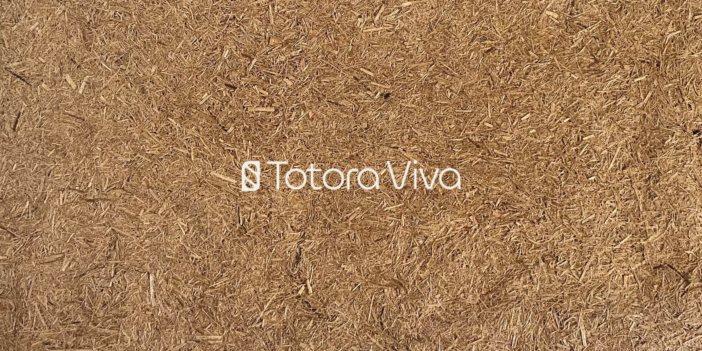
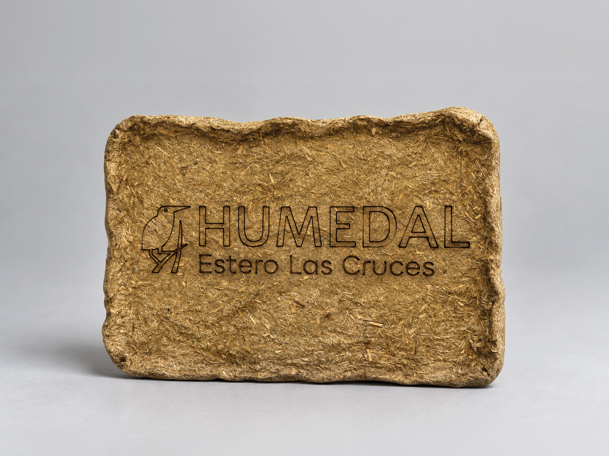

02 / Diseño integral
TOTORA VIVA / TORAPLEX
Totora Viva reconecta a Quilicura con el Humedal Estero Las Cruces mediante un biomaterial de totora, señalética y educación ambiental.

Sobre el proyecto
Totora Viva es un proyecto integral que busca revitalizar la relación entre la comunidad de Quilicura y el Humedal Estero Las Cruces mediante la puesta en valor de la totora como recurso identitario, ecológico y cultural.
La iniciativa se articula a través de tres ejes complementarios: el desarrollo del biomaterial Toraplex, pensado específicamente para aplicaciones laminares y para la creación de señalética destinada tanto al humedal como a distintos puntos de la ciudad, una plataforma web educativa que comunica su importancia ecológica e histórica, y un plan de difusión y participación comunitaria que fortalece la conexión territorial.
Totora Viva / Aplicaciones y difusión
Aplicaciones y difusión.

Aplicación del biomaterial de totora en una pieza de identificación para el Humedal Estero Las Cruces.

Diseño UC · CEDEUS · Fundación Kennedy
Totora Viva / Láminas del proyecto
Investigación y desarrollo.
Contexto del humedal, referentes y oportunidad de diseño.
Biomaterial, plataforma web, pruebas y estrategia de difusión.
Plataforma web / Totora Viva
El proyecto continúa aquí.
Explora la totora, su vínculo con el territorio y el biomaterial Toraplex en la web del proyecto.